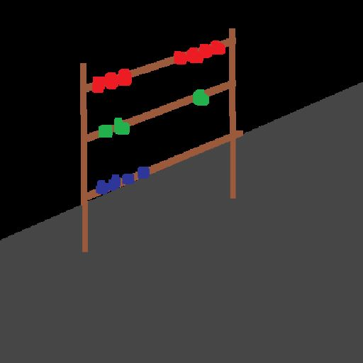

 TableTopTracker
- Used to Track Scores and turns in a tabletop game mostly aimed at warhammer 40k.
- Skills I used to make this project:
-
- C#
- Object-oriented programming
- User Design
-
- Unity UI
- Data Pertsitance
- Unity Software
This was my first experience using Unitys UI system, so i decided to make a app that was functional for my hobbie.